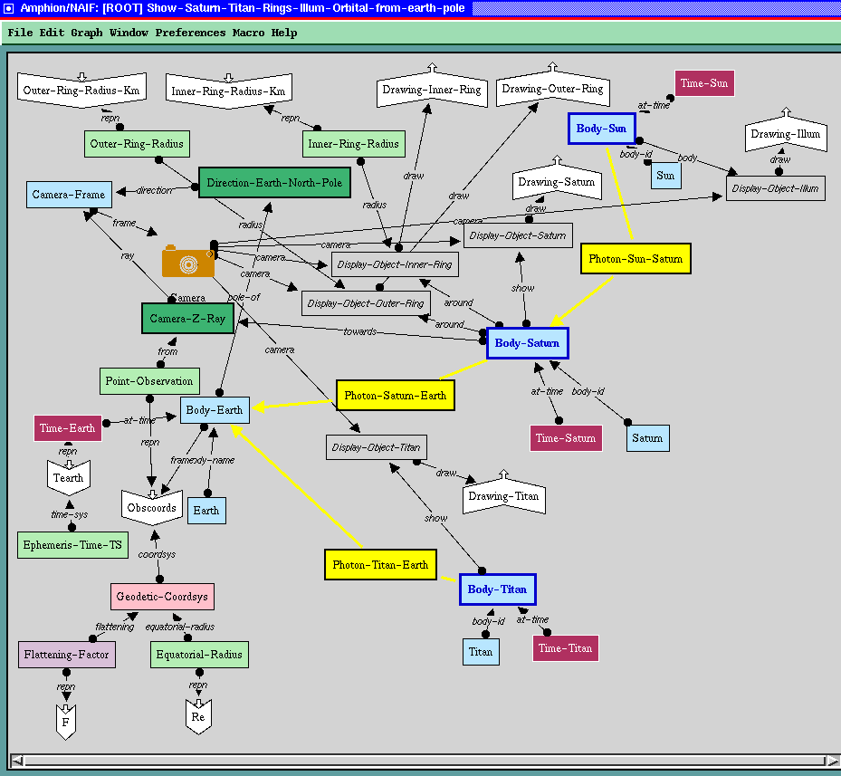

ATP in KBR?

Existing Work
- Specialized logics, e.g., DLs
- Specialized KR schemes, e.g., Yago
- Purpose built, e.g., Cyc
- Not deployed, e.g., PPBTP
- Academic development, e.g., MaLARea, SInE
Use of Classical First-Order ATP
- SNARK - Anthion, Biodeducta, etc.
- Erm, ...